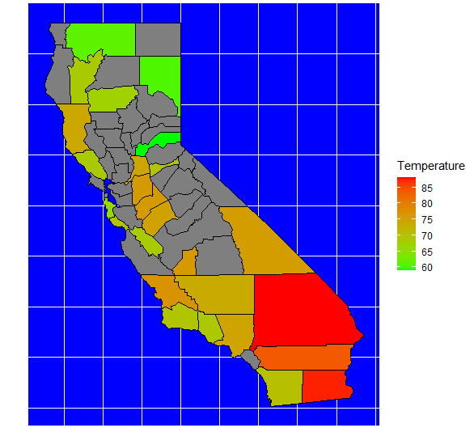
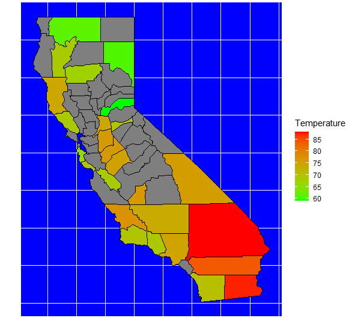

libraries
library(janitor) library(ggplot2) library(dplyr) library(readr) library(lubridate) library(maps) library(mapdata) library(ggmap)
Loading Packages
- readcsv()
Importing Data

set.seed(#) makes random numbers reproducable Data1 = round(rnorm(50,78,10)
Ploting Data
plot(Data1~Data2, main='Title', xlab='xaxis', ylab='yaxis', col='color'

 

Saving Graphs